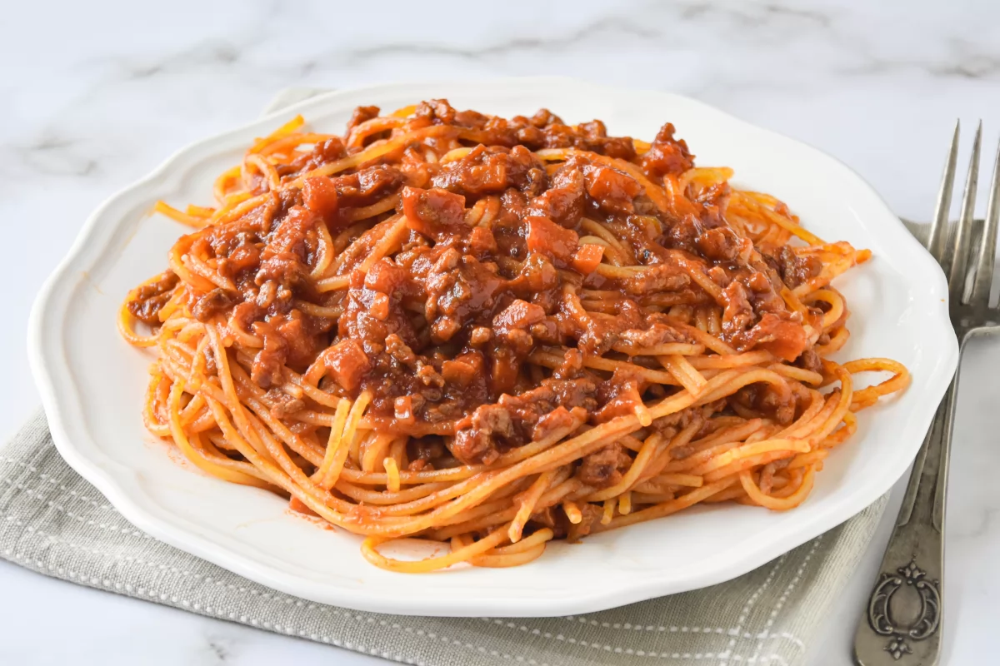
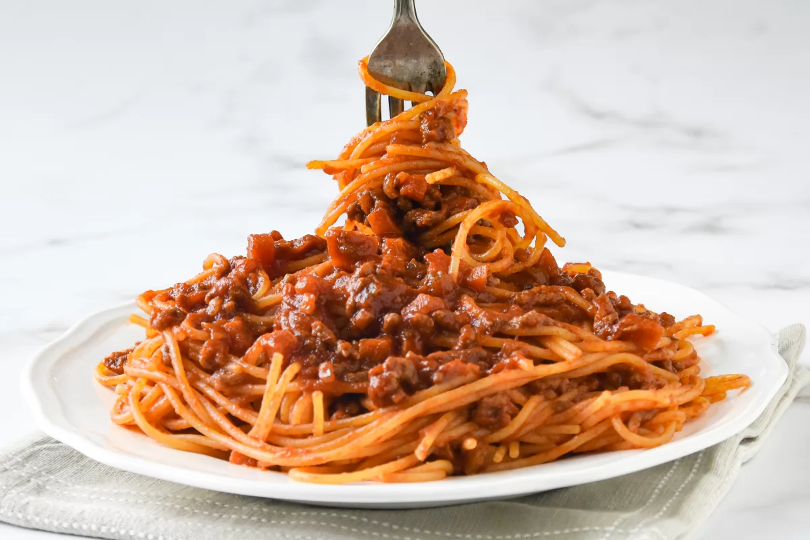

Los espaguetis a la boloñesa, conocidos en Italia como spaghetti al ragù alla bolognese, son un plato emblemático de la cocina italiana que combina pasta larga con una salsa rica en carne, tomate, cebolla, zanahoria y vino. Aunque internacionalmente se ha popularizado con espaguetis, en su versión tradicional de la ciudad de Bolonia se suele servir con tagliatelle, una pasta más ancha que retiene mejor la salsa. La receta del ragù alla bolognese fue oficialmente registrada en 1982 por la Accademia Italiana della Cucina, estableciendo los ingredientes y métodos auténticos de preparación. Este plato, con sus variantes modernas, se ha convertido en un clásico universalmente reconocido.
Ciudad de Bolonia
La pasta a la boloñesa gusta a todo el mundo y, aunque requiere de una cocción lenta, la preparación es muy fácil y el resultado vale la pena.
Os aconsejamos que hagáis más cantidad de salsa boloñesa y la congeléis en porciones, no pierde nada en sabor y es un gusto poder disfrutar de esta salsa en cualquier otra ocasión; la podemos utilizar para preparar, además de estos spaghetti alla bolognese, calabacines rellenos, sobre un puré de patatas, como relleno de pizza...
Para preparar esta receta, utilizaremos passata que es tomate triturado muy fino, cocinado a fuego muy lento para que se concentre. Podemos encontrar passata en los supermercados aunque en caso de no encontrarlo, otra opción es utilizar en su lugar tomate frito de buena calidad.
Antes de continuar te recomendamos reproducir la siguiente canción para una mejor experiencia.
Información de la receta.
- Tiempo de preparación: 30 minutos
- Tiempo de cocinado: 1 hora
- Raciones: 2
- Categoría: plato principal
- Tipo de cocina: italiana
- Calorías por ración (kcal): 506
Ingredientes:
- Carne picada - 450 g
- Cebolla - 1 pieza
- 3 dientes de ajo
- Zanahoria - 1 pieza
- 3 palitos de apio
- Vino tinto seco - 120 ml
- Albahaca
- Tomates picados - 200 g
- Pasta tallarines - 250 g
- Queso parmesano
- Sal, pimienta negra
- Aceite de oliva